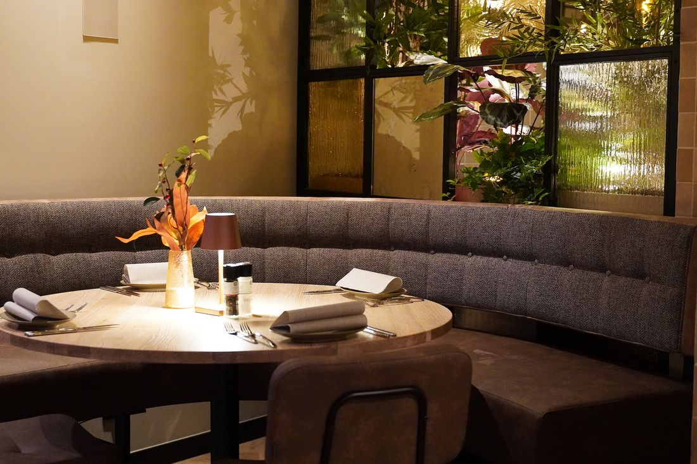
Lunch
Vanaf 10.30 uur
Sandwiches op desembrood, maaltijdsalades, kroketten, pannenkoeken en onze proeverijen van vlees, vis of vega.
Bekijk de lunchkaart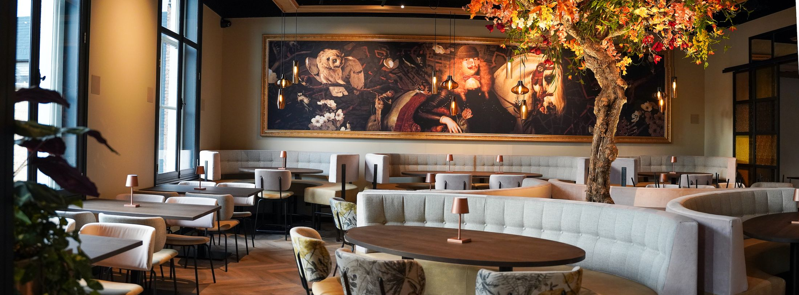
Midden in de Bergse binnenstad, met uitzicht op de Dikke Boom en de Peperbus. Voor een uitgebreide lunch, een borrel aan de bar of een diner met steaks van de Josper-grill.
De Gouverneur, leuk en gezellig restaurant. Service is prima.John Bult, via Google
Een juiste balans voor liefhebbers van vis, vlees, vegetarisch en vegan. Meerdere keren per jaar passen we de kaart aan, met (streek)producten van het seizoen.

Sandwiches op desembrood, maaltijdsalades, kroketten, pannenkoeken en onze proeverijen van vlees, vis of vega.
Bekijk de lunchkaart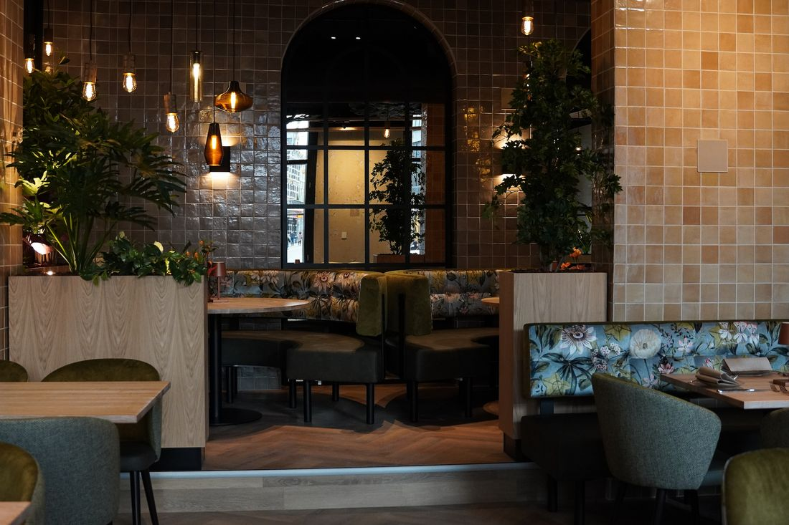
Begin met kleine gerechtjes om te delen, daarna steaks van de Josper-grilloven, verse vis of een vegan flank steak.
Bekijk de dinerkaart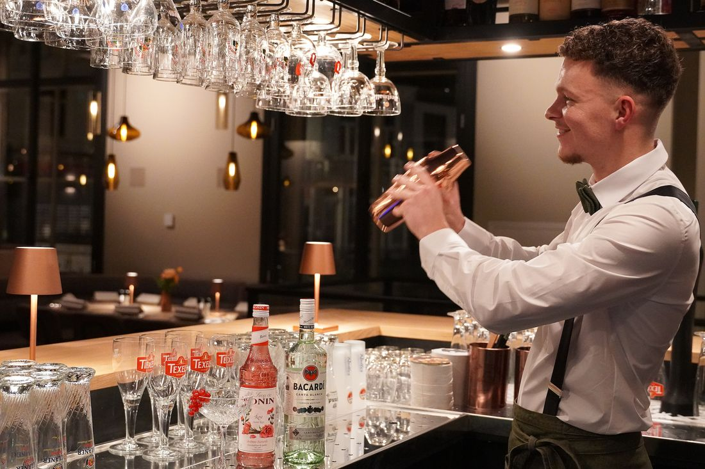
Van een flat white met 't Gouverneurtje tot een cocktail aan de bar. Met een uitgebreide wijnkaart.
Bekijk de drankkaartOok bekijken: de wijnkaart, het kaasmenu en de kinderkaart (met kleurplaat).
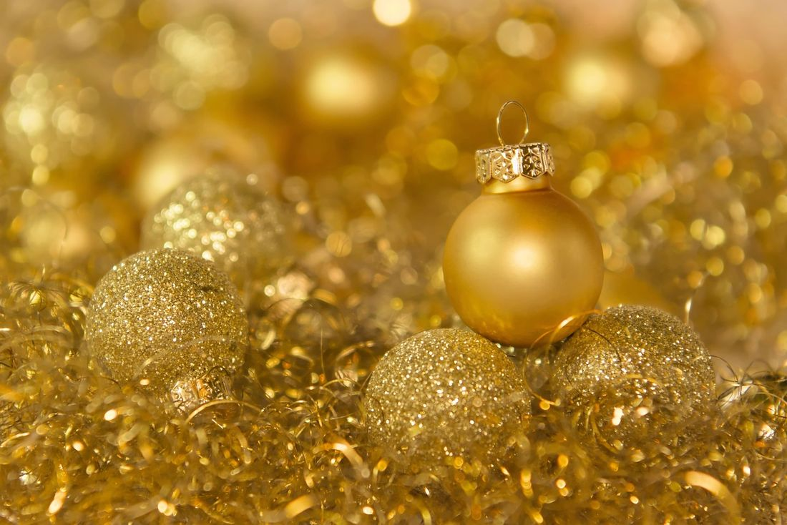
Vier de feestdagen in het Gouvernementshuis. Ons kerstmenu heeft vier gangen, met onder meer tonijntartaar, coquilles, een wildduo van hertenrugfilet en wildstoof, en een trio van chocolade.
Voor-, tussen-, hoofd- en nagerecht. Met een soep of kaasplankje erbij kan ook.
Het voormalig Gouvernementshuis begon in de 13e eeuw als St. Maartensgasthuis. Later was het een Latijnse school, de woning van de Gouverneur van Bergen op Zoom, een militair hospitaal en een bankkantoor.
Sinds 2023 is het weer een plek om samen te komen. U zit midden in de binnenstad, met uitzicht op de Dikke Boom en de Peperbus.
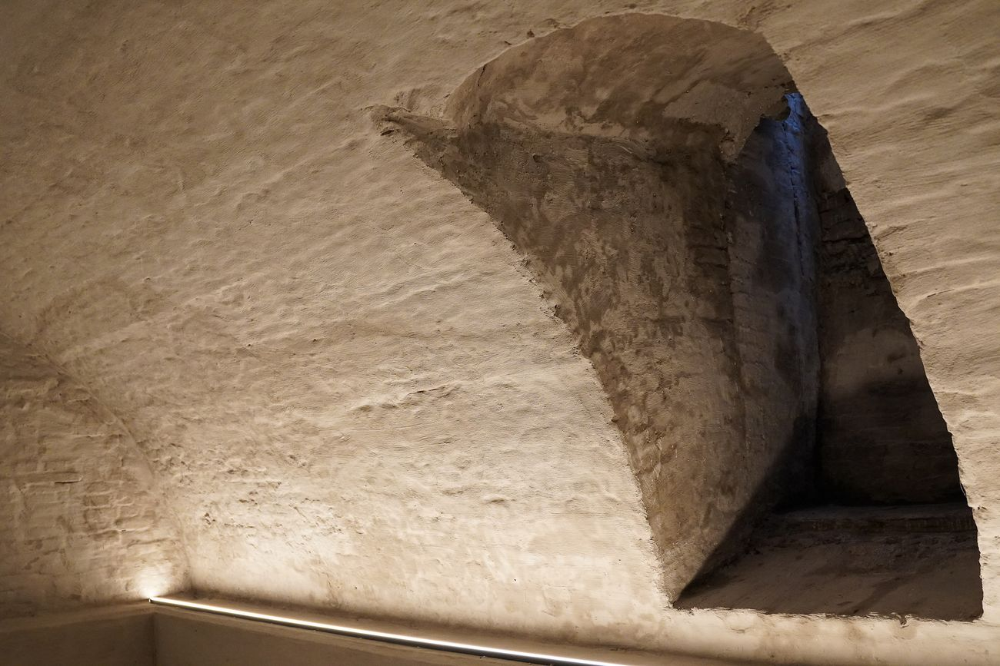
Voor een lunch, borrel, diner of meeting: er is altijd een plek die past.
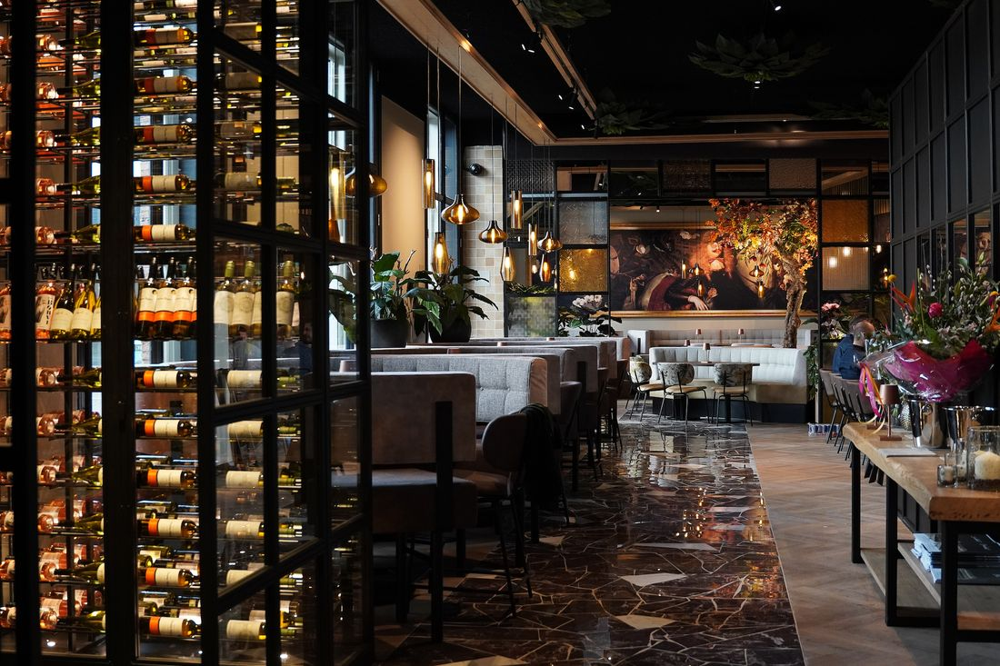
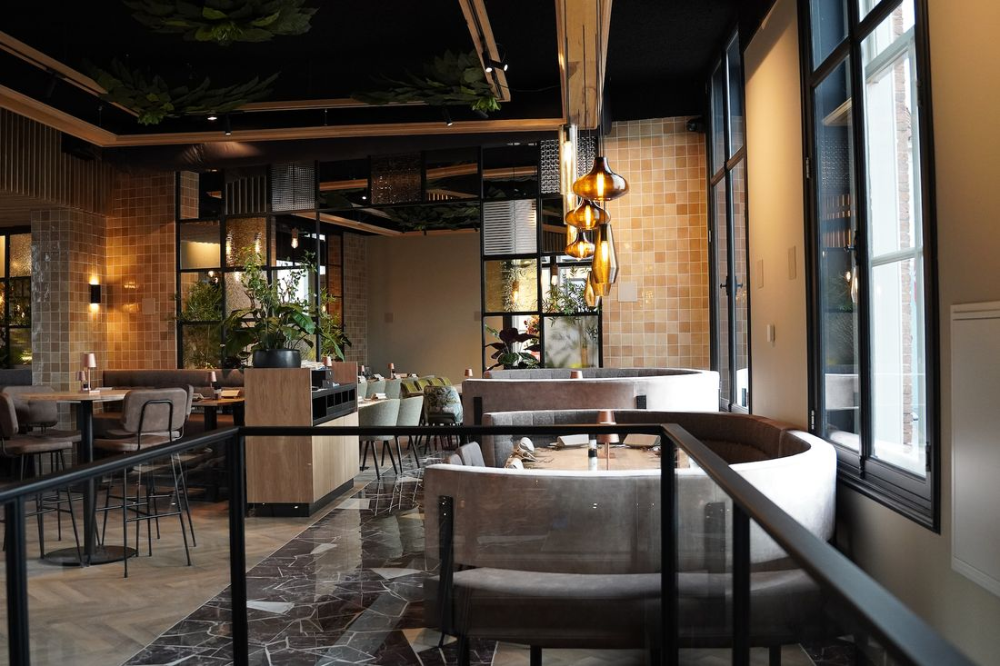
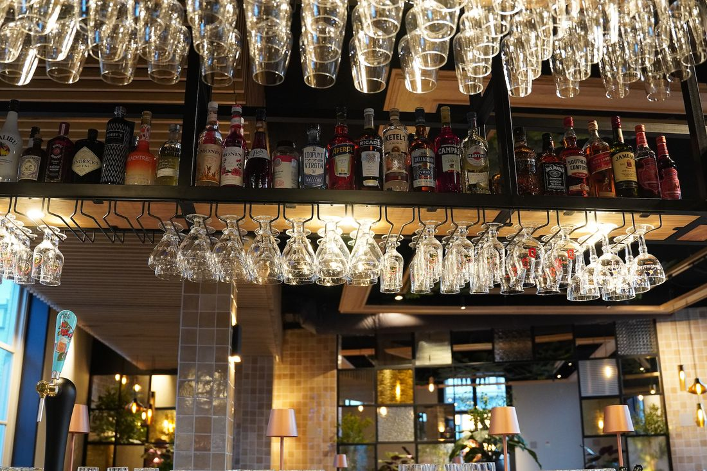
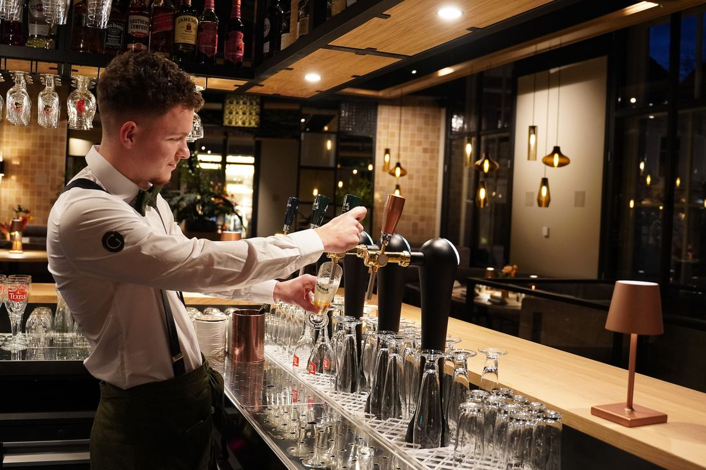
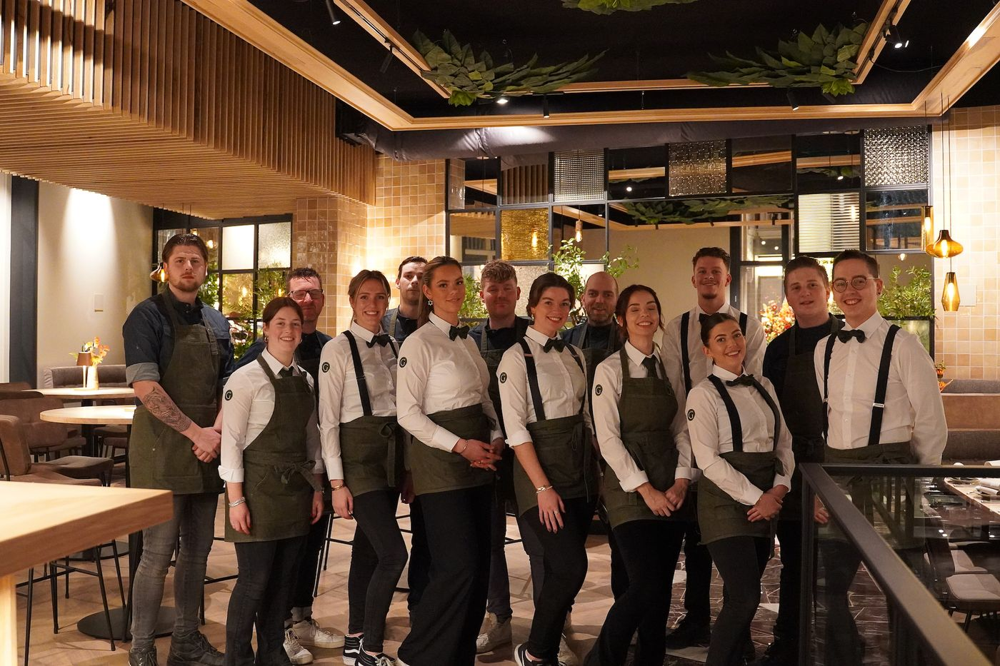
In onze supermoderne keuken maakt het keukenteam, onder leiding van chef-kok Alex Buiten, elke dag de lekkerste gerechten. In de bediening zorgen we voor vriendelijke service, van de eerste koffie tot de laatste cocktail.
"Wij staan voor puur vakmanschap met vriendelijke service en gezelligheid, waardoor elk bezoek een unieke belevenis wordt."
Reserveer online een tafel, of bel ons gerust.
Voor koffie met gebak, lunch, borrel en diner.
Wilt u voor vandaag nog reserveren? Bel ons dan!
0164 32 10 64Voor een lunch, borrel, diner of meeting bent u bij De Gouverneur aan het juiste adres.
Mail of bel ons, dan denken we graag met u mee.
Stuur een mailIn de keuken of in de bediening: samen met enthousiaste collega's elke dag de lekkerste gerechten en drankjes bij de gasten brengen. We zijn leermeester, dus bij ons leer je het vak.